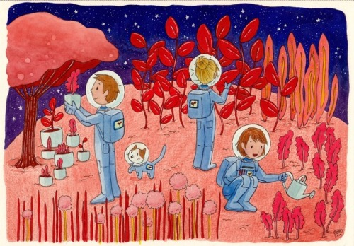

دَعِ الأَيّامَ تَفعَلُ ما تَشاءُ
Leave the days to themselves to do as they like
وَطِب نَفساً إِذا حَكَمَ القَضاءُ
And cure a soul when the judgement will be executed upon him.
وَلا تَجزَع لِحادِثَةِ اللَيالي
Do not dread the plagues of the nights
فَما لِحَوادِثِ الدُنيا بَقاءُ
For the plagues of the world is not permanent
وَكُن رَجُلاً عَلى الأَهوالِ جَلداً
Be a resilient man against the dreadful situations.
وَشيمَتُكَ السَماحَةُ وَالوَفاءُ
While your nature is tolerant and devout
وَإِن كَثُرَت عُيوبُكَ في البَرايا
If your defects among the people become many
وَسَرَّكَ أَن يَكونَ لَها غِطاءُ
Let your happiness be a cover for them.

تَسَتَّر بِالسَخاءِ فَكُلُّ عَيبٍ
You hide all the defects with your nobility
يُغَطّيهِ كَما قيلَ السَخاءُ
And it covers them just as it has been said for the noble
وَلا تُرِ لِلأَعادي قَطُّ ذُلّاً
Do not describe your enemies with disgrace
Surely because gloating your enemies is a plague
فَإِنَّ شَماتَةَ الأَعدا بَلاءُ
وَلا تَرجُ السَماحَةَ مِن بَخيلٍ
Do not expect tolerance from the stingy
فَما في النارِ لِلظَمآنِ ماءُ
Because there is no water for the quenching in the fire
وَرِزقُكَ لَيسَ يُنقِصُهُ التَأَنّي And prudence does not cut from your blessing.
وَلَيسَ يَزيدُ في الرِزقِ العَناءُ
suffering does not raise it either
وَلا حُزنٌ يَدومُ وَلا سُرورٌ
Neither sorrow continues nor happiness.
وَلا بُؤسٌ عَلَيكَ وَلا رَخاءُ
Neither hardship nor comfort
إِذا ما كُنتَ ذا قَلبٍ قَنوعٍ
If you have a content heart
فَأَنتَ وَمالِكُ الدُنيا سَواءُ
Then you and the sultan of the world are equal
وَمَن نَزَلَت بِساحَتِهِ المَنايا
And if death comes to someone’s plain
فَلا أَرضٌ تَقيهِ وَلا سَماءُ
There is no piece of earth to protect him or the sky
وَأَرضُ اللَهِ واسِعَةٌ وَلَكِن
While the earth of God is vast but
إِذا نَزَلَ القَضا ضاقَ الفَضاءُ
If (his) decision comes all (your decisions) end.
دَعِ الأَيّامَ تَغدِرُ كُلَّ حِينٍ
So let the days bring its vicissitudes
فَما يُغني عَنِ المَوتِ الدَواءُ
There is no cure whatsoever suffices for death.
❮
❯